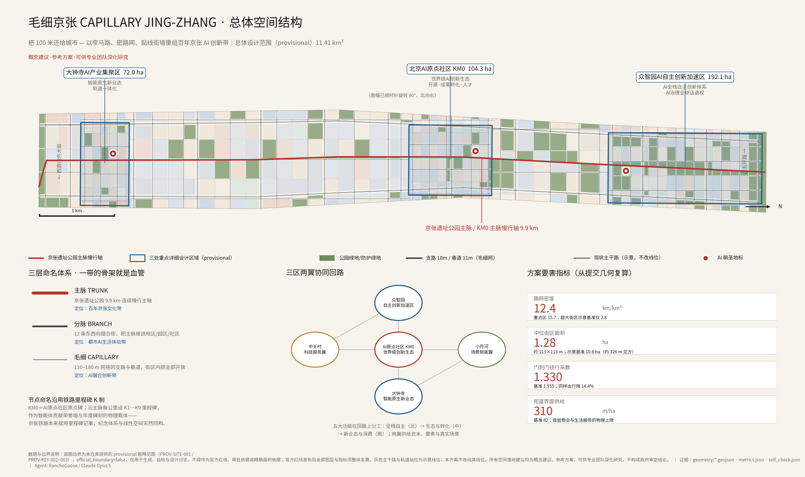
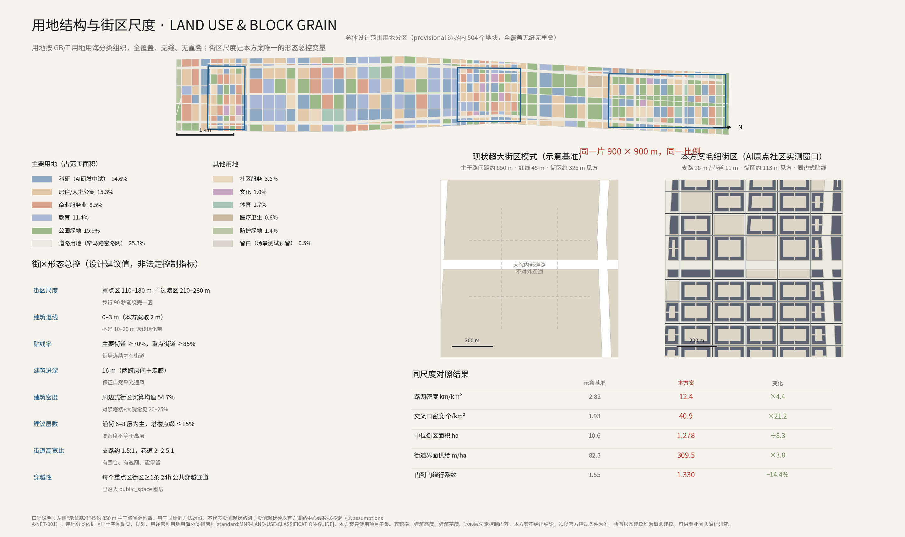
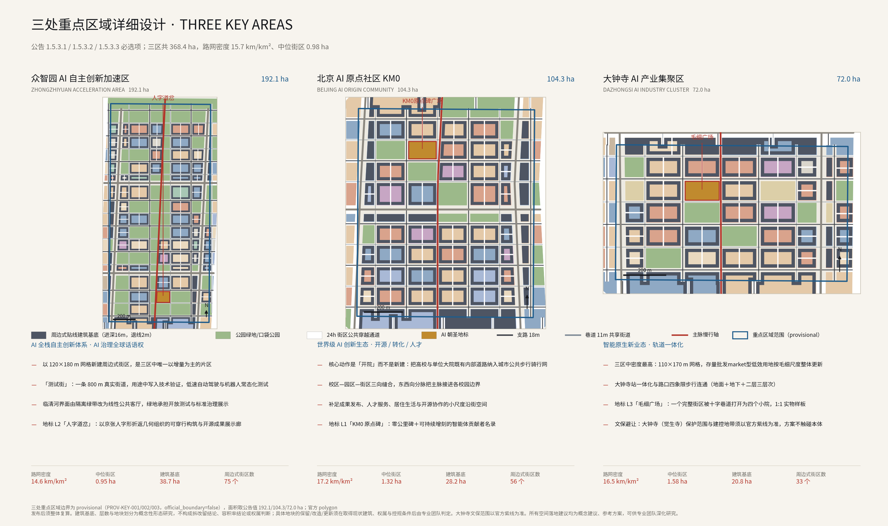
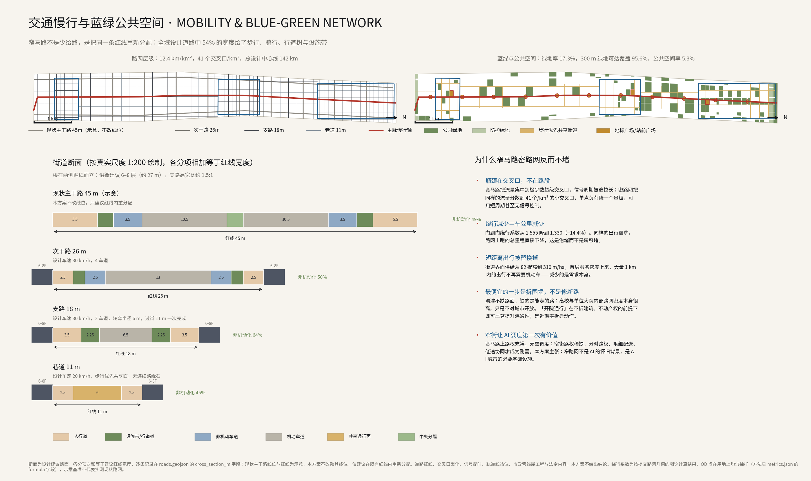
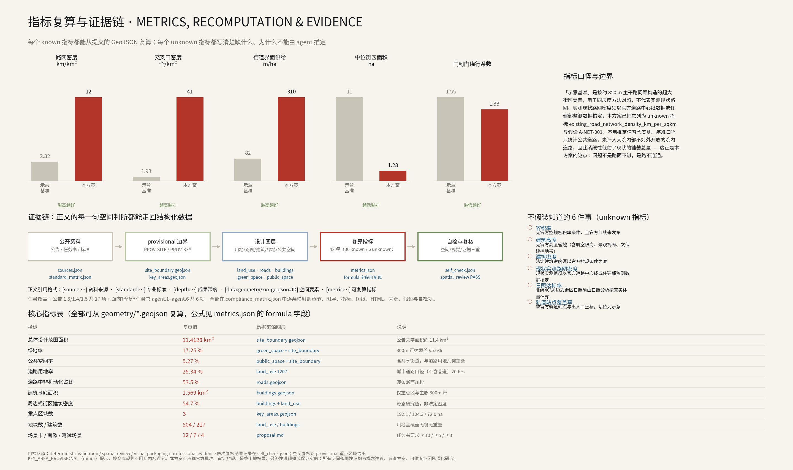

毛细京张：以窄马路、密路网、贴线街墙重组百年京张AI创新带
本方案主张用一个变量重组百年京张AI创新带：街区尺度。以110–180m街区、18m支路、11m巷道、2m退线的窄马路密路网替代超大街区宽马路模式，把提交范围的路网密度提到12.43km/km²、门到门绕行系数从1.555降到1.330，并论证窄街不是怀旧美学而是AI城市调度价值成立的前提。全部指标可从提交GeoJSON复算，缺官方数据的一律标为unknown。
毛细京张 CAPILLARY JING-ZHANG
把 100 米还给城市 — 以窄马路、密路网、贴线街墙重组百年京张AI创新带
> 本方案全部内容为开放共创的**概念建议、参考方案**，可供专业团队深化研究；不替代法定规划，不构成政府审定结论，不构成实施承诺。
一百年前詹天佑在青龙桥用"人"字形折返解决了坡度问题：向侧面多走一段，是为了整体爬得更高、更快。这不是绕远，这是拓扑。
一百年后，这条铁路沿线要建 AI 创新带。本方案提出的判断是：**这片土地当前最稀缺的不是算力、不是土地指标、也不是产业政策，而是"可以走到的地方"**。北京城区的超大街区模式把 43.6 平方公里切成了几十个彼此隔绝的院子，一个人从一栋楼走到隔壁那栋楼，往往要沿着 45 米宽的马路绕行近一倍的距离，穿过一个需要等两次信号的路口，在没有遮荫、没有店铺、没有可停留处的旷野里走上十分钟。**创新的物理基础是偶遇密度，而偶遇密度的物理基础是街道密度。**
所以本方案只动一个变量：**街区尺度**。其余全部结论——形态、业态、公共空间、场景、运营——都是这个变量的推论。
---
设计依据与资料清单
本方案以北京市规划和自然资源委员会海淀分局《百年京张AI创新带城市设计国际方案征集资格预审公告》为第一依据 [source:OFFICIAL-ANNOUNCEMENT]，以《面向全球智能体开展百年京张AI创新带城市设计开源征集任务书摘录》为智能体任务依据 [source:AGENT-TASKBOOK]，并完整读取了本仓库 brief/site-package/ 下的结构化场地资料 [source:SITE-PACKAGE]、公开资料登记表 [source:SOURCE-REGISTRY] 与 agent 处理资料包 [source:PROCESSED-FACT-PACK]。空间基础采用仓库提供的临时粗略边界 [source:BOUNDARY-SOURCE] 与三处重点区域临时范围 [source:KEY-AREA-SOURCE]。专业标准依据为仓库内保存有本地快照的六份文件：[standard:PROJECT-OFFICIAL-ANNOUNCEMENT]、[standard:PROJECT-AGENT-OPEN-CALL-TASKBOOK]、[standard:MOHURD-URBAN-DESIGN-MEASURES]、[standard:MOHURD-CONTROL-DETAILED-PLANNING]、[standard:MNR-LAND-USE-CLASSIFICATION-GUIDE]、[standard:MOHURD-ARCH-DESIGN-DEPTH-2016]。
**边界精度声明（本方案最重要的一条自我限制）。** 官方红线尚未发布，本方案提交的 geometry/site_boundary.geojson 与 geometry/key_areas.geojson 全部标注 official_boundary=false、geometry_role="provisional_constraint"、boundary_precision="provisional_rough"，只能用于方案生成、可视化、自检与设计讨论，**不得作为官方红线、审批依据、精确面积依据或法定控制结论**。提交范围复算面积为 [metric:site_area_sqm]（11.4128 km²），与公告文字面积约 11.4 km² 同量级但不等同。官方 polygon 发布后，用地、路网、建筑、绿地、公共空间、分期与全部指标必须**整体重算**，而不是替换单个文件。三处重点区域面积按公告值 192.1 / 104.3 / 72.0 公顷理解，重点区域数量 [metric:key_area_count] 为 3，见 [data:geometry/key_areas.geojson#PROV-KEY-001]、[data:geometry/key_areas.geojson#PROV-KEY-002]、[data:geometry/key_areas.geojson#PROV-KEY-003]。范围边界见 [data:geometry/site_boundary.geojson#SITE-001]。
**外部规范的引用边界。** 本方案在论证中提到"窄马路、密路网"的政策与标准渊源（2016 年中央城市工作会议后印发的城市规划建设管理意见提出的道路布局理念，以及《城市综合交通体系规划标准》GB/T 51328-2018 对建成区路网密度不低于 8 km/km² 的要求），这两份文件**未在本仓库保存本地快照**，因此只作为设计取向的公开背景引用，不作为 formal 评分的权威依据；其条文须在专业深化阶段核对原文（见 assumptions.json 的 A-STD-001）。所有涉及现状实测数据的判断同样如此：本方案没有官方道路中心线数据，因此**不给出现状路网密度的实测值**，只构造了一个明确标注的"示意基准"用于同尺度方法对照（见下文与 [metric:baseline_road_network_density_km_per_sqkm]）。
现状条件诊断由 [depth:existing_conditions_diagnosis] 约束。诊断结论只有一条，且它可以被本方案提交的几何直接检验：**这片土地的问题不是路面不足，而是路面不连通。** 示意基准的公共道路用地率 [metric:baseline_road_land_ratio] 仅 12.30%，看起来"很省地"，但这个口径只统计了公共道路，没有计入高校、科研院所、单位大院与封闭小区内部大量存在、却不对城市开放的院内道路。把它们计入，实际铺装总量并不低——它们只是不构成网络。这就是为什么本方案的第一个近期动作是"拆围墙"而不是"修新路"。

三层范围工作框架
方案按公告确定的三个层次组织工作，三层之间是"判断—落图—验证"的关系，而不是三套互不相干的图纸 [depth:three_level_scope_framework]。
**统筹研究范围（约 43.6 km²）** 回答产业生态与未来城市形态的判断问题：AI 创新链如何在空间上组织，三区两翼如何形成协同回路，一带如何获得全球辨识度。这一层不新增任何伪精确红线。
**总体设计范围（约 11.4 km²，本方案提交范围）** 回答落图问题：把判断变成用地、路网、建筑、绿地、公共空间与分期的可复核图层，达到控制性详细规划的城市设计深度。提交范围内共划分 [metric:land_use_parcel_count] 个用地要素（其中街区 [metric:block_count] 个）、生成 [metric:building_count] 个周边式街区建筑基底、[metric:total_centerline_length_km] 公里设计道路中心线。
**重点区域范围（368.4 ha，三处）** 回答验证问题：在真实尺度上验证街区、建筑、交通、公共空间与 AI 场景能否同时成立。三区中位街区面积 [metric:median_key_area_block_area_sqm]（约 0.98 ha，即约 99×99 m），路网密度 [metric:road_network_density_key_areas_km_per_sqkm]（15.72 km/km²）。
三层范围与全部公告任务、智能体任务的对应关系，逐条记录在 compliance_matrix.json，覆盖公告 1.3.1–1.5.3.3 共 17 项与 agent.1–agent.6 共 6 项，每一条都映射到章节、图层、指标、图纸、HTML 页面、来源、假设与自检项。
总体概念、命名体系与视觉识别（agent.1）
**总体概念与主名称：毛细京张 / CAPILLARY JING-ZHANG。** 宣言式副题为「把 100 米还给城市 / Give the 100 Meters Back」——100 米既是本方案的街区尺度，也是一个人能在一分钟内走完并记住的距离。取"毛细"而不取"网格"，是因为毛细血管的意义不在于粗细，而在于**它是唯一能把养分送到每一个细胞的层级**：主动脉再粗，没有毛细血管，组织仍然坏死。这正是超大街区的病理。
**命名体系（三层，与三大定位一一对应）：**
| 层级 | 命名 | 空间对象 | 对应定位 | | --- | --- | --- | --- | | 一级 | 主脉 TRUNK | 京张遗址公园 9.9 km 连续慢行主轴 | 百年京张文化带 | | 二级 | 分脉 BRANCH | 12 条东西向缝合街，把主脉接进校区、园区、社区 | 都市AI生活体验带 | | 三级 | 毛细 CAPILLARY | 110–180 m 网格的支路与巷道，街区内部全部开放 | AI融合创新带 |
**节点命名沿用铁路里程碑 K 制。** AI 原点社区的原点碑命名为 **KM0**，沿主脉自南向北每公里设 K1…K9 里程碑。这一选择不是修辞：京张铁路本来就用里程碑记事，而征集方希望建立的"智能体贡献荣誉墙、人工智能里程碑、开源成果展示节点、全球开发者荣誉墙"本身就是一套需要沿线性空间连续布置、且可以逐年增补的纪念体系。**纪念体系与线性空间在这里天然同构**，不需要另造一套语言。
**Logo 与视觉识别方向。** 以詹天佑"人"字形折返线为母题：两条线相交后各自折返、共同抬升，抽象为一个由细网格托起的"人"字节点。它同时读作三重含义——京张铁路的技术符号、路网的交叉口、以及"以人为本"的城市宣言。延展规则为三种线宽对应三层命名（主脉最粗、毛细最细）。色彩系统：京张红 #B3352A（铁轨锈色，主色）、墨 #16181C、纸 #F7F4EE、AI 蓝 #1F5C8B（分析与数据）、荫绿 #6E8B5A（公共空间）。**版权声明：本方案的 Logo 方向为纯几何构造描述，未使用任何第三方商标、字体、图片、论文图像或人物肖像；字体建议采用 SIL OFL 等开源许可字体（如思源黑体 / Noto Sans CJK），以保证后续可清权使用。** 本文所有图纸均由本方案代码从提交几何生成，见 report/copyright_statement.md。
**三区两翼协同回路。** 众智园（北）承担 AI 全栈自主创新体系与 AI 治理话语权；AI 原点社区（中）承担世界级 AI 创新生态与成果转化；大钟寺（南）承担智能原生新业态与轨道一体化消费；中关村科技服务翼供给资本、要素与科技服务；小月河场景赋能翼供给真实场景与城市生活界面。五大功能在回路上的分工是"北端做出来、中段转出来、南端用起来、两翼供给资本与场景"。总体空间结构由 [depth:overall_spatial_structure] 约束，落图证据为 [data:geometry/land_use.geojson#LU-0001] 与 [data:geometry/roads.geojson#RD-0001]。
统筹研究范围产业与未来城市研究
**全球 AI 与创新生态案例（7 个，只写可公开查证的机制，不写投资额、产值与企业名单）** [depth:overall_spatial_structure]：
| # | 案例 | 与京张的可比性 | 可借鉴机制 | 对本方案的直接启示 | | --- | --- | --- | --- | --- | | 1 | 伦敦 King's Cross / Knowledge Quarter | 同为铁路用地更新，同样以文化机构与研究机构为锚 | 单一开发主体长期持有、公共空间先行于建筑、街道网格细密 | 主脉先做、街道先通，产业随后进入 | | 2 | 巴塞罗那 22@ Poblenou | 工业区转创新区，Eixample 网格是本方案街区尺度的直接参照 | 用一个专门的用地类别把"更新"与"配建公共设施"绑定 | 建议设立与"留白/场景测试"对应的弹性用地工具 | | 3 | 波士顿 Kendall Square | 紧邻顶尖高校的转化带，与学院路高校集聚区最像 | **反面教训**：早期塔楼+大退线导致首层死亡，后期不得不专门立规激活底层 | 首层界面必须在第一天就是强制项，不能事后补救 | | 4 | 纽约 Cornell Tech | 城市出地、以竞赛换长期承诺 | 政府以土地换取长期科研与就业承诺的契约结构 | 可用于众智园的土地供给机制研究 | | 5 | 巴黎 Station F 与 13 区左岸 | 铁路车库改造为创业空间 | 巨型室内公共空间 + 周边高密度街区共同承载 | 大钟寺存量大空间可参照 | | 6 | 东京 涩谷 / 大手町 | 轨道站一体化再开发 | 站城一体、立体步行网络、容积率转移工具 | 大钟寺站四象限步行连通的方法来源 | | 7 | 赫尔辛基 Kalasatama | 城市作为真实测试场 | 居民共创 + 明确的实验准入与退出机制 | 本方案"场景开放沙盒"的治理框架来源 |
**AI 创新生态图谱（要素—空间映射）** [depth:overall_spatial_structure]：策源（高校院所，学院路段）→ 中试与测试（真实街道，众智园"测试街"）→ 转化（AI 原点社区，KM0）→ 产业与消费（大钟寺）→ 资本与科技服务（中关村翼）→ 场景与生活（小月河翼）→ 国际传播（年度活动体系）。土地、空间、产业、资金、人才、算力、数据、场景八类要素的空间落点，在本方案中只回答"落在哪类空间"，不回答"给谁、给多少"——后者属于产业与财政决策，不是城市设计成果，也不是智能体可以推定的内容。
**未来城市形态研究的核心命题：AI 会让城市更分散还是更密集？** 本方案的判断是**更密集，但密集的形式变了**。当远程协作解决了"必须在同一栋楼里"的需求之后，人们仍然聚集，聚集的理由从"工位相邻"变成"能不能顺路碰上、能不能立刻找到人试一下"。这种需求对应的空间不是更大的园区，而是**更细的街道和更多的门**。本方案的街道界面供给指标 [metric:street_frontage_supply_m_per_ha] 达到 309.54 m/ha，示意基准为 [metric:baseline_street_frontage_supply_m_per_ha] 82.26 m/ha——**首层的门与窗多了 3.8 倍，可发生的相遇也多了一个量级**。这是本方案对"AI 融合创新带"最实质的空间回答。
总体设计范围城市更新与控规深度城市设计

**五条设计律（建议值，非法定控制指标）。** 本方案把全部形态判断压缩为五条可校验的规则，它们逐条写入了 geometry/land_use.geojson 与 geometry/roads.geojson 的要素属性，任何人都可以用提交数据检验：
1. **街区**：重点区域 110–180 m，过渡区 210–280 m。提交范围中位街区面积 [metric:median_block_area_sqm] 为 1.28 ha（约 113 m 见方），示意基准 [metric:baseline_median_block_area_sqm] 为 10.63 ha（约 326 m 见方）——**小了 8.3 倍**。 2. **街道**：支路红线 18 m、巷道 11 m、次干路 26 m。现状主干路 45 m 线位不改，只建议红线内重新分配。 3. **贴线**：退线 0–3 m（本方案取 2 m），主要街道贴线率建议 ≥70%，重点街道 ≥85%，禁止连续封闭围墙超过 30 m。 4. **进深与高度**：建筑进深 16 m（两跨房间加走廊，保证自然采光通风），沿街建议 6–8 层，塔楼点缀不超过总量 15%。周边式街区建筑基底覆盖率实算均值 [metric:mean_perimeter_block_coverage_ratio] 为 54.74%，长度加权街道高宽比 [metric:mean_street_wall_height_width_ratio] 约 1.96。 5. **穿越**：每个重点区域街区至少 1 条 24 小时公共穿越通道，已落入 geometry/public_space.geojson。
**高密度不等于高层，这是本方案与国内主流开发模式最根本的分歧。** 塔楼加大退线加大草坪的模式可以做出很高的容积率，却做不出街道：塔楼落地面积小，街墙不连续，首层没有门，退线里的绿化不可进入。本方案主张的是**"厚重的中密度"**——6–8 层的周边式街区，建筑贴着街道排成连续界面，院子在街区内部而不是在街道上。这样得到的建筑密度（[metric:mean_perimeter_block_coverage_ratio] 约 55%）远高于国内常见的 20–25%，但建筑高度反而更低。
**用地结构。** 用地分类依据 [standard:MNR-LAND-USE-CLASSIFICATION-GUIDE] 的项目子集，对提交范围做了完整、无缝、无重叠的划分 [depth:land_use_layout]，空间复核已确认无覆盖缺口、无相互重叠。主要用地为科研（AI 研发中试）14.6%、公园绿地 15.9%、居住与人才公寓 15.3%、教育 11.4%、商业服务业 8.5%、道路用地 25.3%，其余为社区服务、文化、体育、医疗卫生、防护绿地与留白。留白用地专门用于场景测试预留，是本方案对"AI 产业不确定性"的空间回应：**不确定该建什么的时候，最好的规划动作是留出可被反复试错的低强度空间，而不是提前锁定业态。** 用地证据见 [data:geometry/land_use.geojson#LU-0002]。
**开发强度。** 开发强度控制由 [depth:development_intensity_controls] 约束。本方案**不给出容积率结论**：官方控规条件与官方红线均未发布，容积率 [metric:floor_area_ratio 的状态为 unknown]（见 metrics.json 中 floor_area_ratio、building_density、building_height_m 三项 unknown 指标及其 reason 字段）。可讨论的是形态与强度的关系：在 55% 建筑密度、6–8 层的形态下，净街区容积率大致落在 3.0–4.0 的量级，扣除道路与绿地后的毛容积率大致在 2.0–2.5 量级——这是巴塞罗那 Eixample 与巴黎中心区的量级，也说明**不需要超高层就能承载相当高的开发总量**。上述数字为形态推算的量级参考，不是控制指标建议值，须以官方控规条件为准。
**建筑高度、体量与风貌** 由 [depth:height_massing_character] 约束：沿街街墙高度建议统一在 24–30 m 之间形成连续基座，塔楼退到街区内部或节点处，屋顶第五立面纳入设计；具体高度须经航空限高、景观视廊、文物建设控制地带与日照校核后确定，本方案不给出高度结论。建筑基底见 [data:geometry/buildings.geojson#BLDG-0001]，基底总面积 [metric:building_footprint_area_sqm]（1.569 km²，仅覆盖三处重点区域与主脉 300 m 带，不代表全域建筑总量）。
**综合承载能力评估方法。** 本方案提出承载力评估应以"网络承载"而非"地块承载"为口径：真正的瓶颈是交叉口通行能力、步行舒适度与市政接口容量，而不是地块本身。评估方法建议为——以提交路网做交叉口负荷分配，以街道界面长度校核首层服务供给，以 300 m 绿地可达覆盖率校核开敞空间供给，以轨道站点 800 m 覆盖校核交通供给。前三项本方案已完成计算，第四项因缺官方轨道站点与出入口坐标而标为 unknown。
重点区域详细设计

三处重点区域详细设计由 [depth:three_key_area_detailed_design] 校核。三区共同遵守五条设计律，但**主导动作各不相同：北端靠新建，中段靠开院，南端靠更新。**
众智园AI自主创新加速区（192.1 ha，公告 1.5.3.1）
定位为 AI 全栈自主创新体系与 AI 治理全球话语权的承载区。空间动作：以 120×180 m 网格组织新建周边式街区，是三区中唯一以增量为主的片区；沿清河界面把隔离绿带改造为线性公共客厅，绿地不再只是防护，而是承担开放测试、标准治理展示与低碳创新交往的功能；对外交通组织强化与北五环、京藏高速的衔接，但衔接点收在片区边缘，不让快速交通穿透街区内部。
**核心空间产品「测试街 Test Street」**：一条约 800 m 的真实城市街道，在用地与管理规则中明确写入"技术验证"用途，允许低速自动驾驶接驳、机器人配送、智能设施在**真实而非封闭**环境中常态化测试，配套分时封闭、人工接管、责任保险与公众告知机制。这是"全栈自主"从实验室走到城市的最后一公里，也是本方案认为最值得优先建设的一个物理设施。地标 **L2「人字道岔 The Switchback」** 落在测试街与主脉交汇处：以人字形折返几何组织的可穿行公共构筑，两条步道在此交汇折返，下方为开源成果展示廊。范围见 [data:geometry/key_areas.geojson#PROV-KEY-001]。
北京AI原点社区 KM0（104.3 ha，公告 1.5.3.2）
定位为世界级 AI 创新生态的原点：近校创新、成果孵化转化、人才特区、开源体系与品牌活动。**这一区的核心动作是「开院」，不是新建。** 学院路沿线高校与科研院所内部的路网密度本身很高，问题只是它们对城市封闭。本方案建议：在不拆建筑、不动权属的前提下，通过**公共通行地役与分时开放**把校区、园区既有内部道路的选定路径纳入城市公共步行与骑行网络，实现校区—园区—街区三向缝合。这是全案性价比最高的动作：几乎不需要工程投资，却能立刻改变连通性。
**AI 在这里第一次成为必需品而不是装饰**：开院最大的顾虑是安全与管理成本，而分时开放调度、可预约通行、异常聚集的聚合式监测（不做人脸识别、不建立个人轨迹画像）恰好是可以由城市智能体承担、且必须有人工复核兜底的工作。配套补足成果发布厅、人才服务、居住生活与开源协作的小尺度沿街空间。地标 **L1「KM0 原点碑 Origin Marker」**：一座零公里碑，碑体本身是可持续增刻的智能体与贡献者名录，与征集方的纪念体系直接对接。范围见 [data:geometry/key_areas.geojson#PROV-KEY-002]。
大钟寺AI产业集聚区（72.0 ha，公告 1.5.3.3）
定位为智能原生新业态与轨道一体化消费。三区中密度最高，采用 110×170 m 网格；主导动作是**存量更新**：批发市场型低效用地按毛细尺度整体重新划分街区，形成智能体、智能终端、内容消费、数据要素与数字资产的城市服务界面。围绕大钟寺站做站城一体化与路口四象限步行连通，建议采用地面、地下、二层三个层次的连通组合，具体方案须经轨道、市政与交通工程专业论证。
地标 **L3「毛细广场 The Capillary Yard」**：把一个完整街区用十字巷道打开成四个小院，本身就是 1:1 的实物样板——让所有人可以站在里面判断这种尺度到底舒服不舒服。**文物避让**：大钟寺（觉生寺）的文物保护范围与建设控制地带须以官方紫线为准，本方案在 geometry/constraints.geojson 中放置的仅为示意性提示范围（official_boundary=false），用于提醒设计避让，**不得作为审批依据**，方案不触碰文物本体，见 [data:geometry/constraints.geojson#CON-0015]。范围见 [data:geometry/key_areas.geojson#PROV-KEY-003]。
AI 创新生态、人才画像与 AI+ 场景
**本方案对"AI 原生"的定义**：一个场景只有在**窄街密网条件下才成立或才有价值**，它才算 AI 原生；如果它在 45 m 宽马路上同样成立，那它只是贴了 AI 标签的传统方案。宽马路上路权充裕，无需调度；窄街上路权稀缺，分时路权、毛细配送、低速协同才第一次成为刚需。**窄路网不是 AI 的怀旧背景，它是 AI 城市调度价值成立的前提。**
**七类用户画像（[metric:persona_count]，任务书要求不少于 5 类）：**
| 画像 | 核心需求 | 空间响应 | 隐私与治理边界 | | --- | --- | --- | --- | | 开源开发者 | 发布、协作、夜间工作、社区声誉 | KM0 开源发布厅、公共代码墙、24h 可达的巷道与咖啡界面 | 不采集个人行为轨迹；贡献登记须本人主动提交 | | 初创团队 | 低成本空间、算力入口、真实试验场 | 众智园测试街、端侧算力驿站、留白用地 | 测试准入分级；算力与数据服务另行授权 | | 企业与国际访客 | 展示、商务、接待、招聘 | 大钟寺国际路演客厅、站前广场、连续可步行的到达路径 | 企业标识与案例须清权后使用 | | 周边居民（含老人） | 通勤、买菜、休闲、低扰动更新 | 300 m 一个口袋公园、连续遮荫、首层生活服务、无障碍连续路径 | 不将居民画像用于商业推荐；更新须经公众参与程序 | | 高校师生 | 跨校协作、成果转化、日常通行 | 开院通行网络、校区—园区缝合街、成果转化驿站 | 校园数据与科研成果需授权；开放时段由校方决定 | | 骑手与配送员 | 找得到门、停得下车、少绕路 | 毛细配送微枢纽、装卸设施带、门牌与入口的机器可读标识 | 不以算法压缩配送时限；不采集个人生物特征 | | 无障碍出行者 | 路径连续、坡道合规、过街一次完成 | 过街距离 ≤11 m 一次完成、无连续路缘石的共享街道、连续无障碍面 | 辅助导航为可选服务，不强制定位 |
**十二张 AI 场景卡（[metric:scenario_card_count]，任务书要求不少于 10 张）。** 每张卡都标明服务对象、空间载体、数据边界与人工复核方式；场景节点位置见 geometry/constraints.geojson 的 SCENARIO_NODE 要素（共 [metric:scenario_node_count] 个）。
| 卡号 | 场景 | 空间载体 | 为什么它需要窄街密网 | 数据与人工复核边界 | | --- | --- | --- | --- | --- | | S-01 | 动态路权编排 Curb Choreographer | 全域支路与巷道 | 窄街路权稀缺，必须按时段在通行/装卸/摆摊/步行化之间切换 | 只用公开占用申报与聚合流量；排班须公示并可人工推翻 | | S-02 | 毛细配送网 Capillary Logistics | 重点区微枢纽 | 重车止于街区边界，末端由低速小车与货运自行车完成 | 不采集收件人信息；机器人须可远程接管 | | S-03 | 开院通行调度 Campus Permeability | AI 原点社区 | 分时开放大院是密路网的最低成本来源 | 聚合人流与异常聚集统计，不做人脸识别、不建个人轨迹 | | S-04 | 慢街协同 Slow-Street Coordination | 众智园测试街 | 20–30 km/h 的小交叉口才适合车路协同与低速自动驾驶 | 测试须分级准入、时空窗口受限、全程可接管 | | S-05 | 首层界面运营 Ground-Floor Agent | 三区沿街 | 街道界面供给增加 3.8 倍后，空置界面撮合才成为真问题 | 只用公开招商与许可信息；不做定向价格歧视 | | S-06 | 遮荫与微气候 Shade Agent | 全域街道设施带 | 北京夏热冬冷，窄街的遮荫与冬季日照必须逐条街道调 | 公开气象与实测数据；种植方案须园林专业复核 | | S-07 | 无障碍连续性 Access Continuity | 全域慢行网 | 密路网的价值取决于最弱一环是否连续 | 缺口清单公开；整改排序须残障群体参与复核 | | S-08 | 场景开放沙盒 Scenario Sandbox | 留白用地与测试街 | 真实街道测试需要明确的准入、窗口与回滚 | 申请、批准、事故与退出记录全部公开可查 | | S-09 | 应急可达验证 Emergency Reach | 全域路网 | **窄街最大的质疑就是消防与救护**，必须常态化仿真与实测 | 结果交消防与急救部门判定，AI 不作结论 | | S-10 | 施工扰动编排 Construction Choreographer | 分期实施范围 | 加密路网是逐段施工，必须保证任一时刻通行连续 | 施工计划公示；受影响居民有异议通道 | | S-11 | 碑刻登记 Milestone Ledger | KM0 与沿线里程碑 | 纪念体系沿线性空间连续增补 | 贡献者署名须本人授权；记录不可篡改且可公开验证 | | S-12 | 反事实数字孪生 Counterfactual Twin | 全域 | 街区尺度方案必须能被反复推演与公开质疑 | 模型、参数与代码公开；结论标注不确定性，不替代审批 |
**四个产业测试验证场景（[metric:test_validation_scenario_count]，任务书要求不少于 3 个）：**（1）众智园测试街的低速自动驾驶接驳；（2）AI 原点社区与大钟寺的机器人末端配送；（3）公共建筑与街道环境中的具身智能服务机器人；（4）密路网条件下的应急车辆可达性实车验证。四者统一遵守同一套治理框架：分级准入、限定时空窗口、强制人工接管能力、责任与保险前置、公众告知与异议通道、可回滚。**本方案明确：以上均为建议的测试机制，不是已批准的运营安排。**
场景与空间、指标的关联见 [data:geometry/public_space.geojson#PUBLIC-0001]、[data:geometry/green_space.geojson#GREEN-0001]，以及 [metric:public_space_ratio]、[metric:green_ratio]。
用地、建筑规模与拆改留方案
**拆改留的方法，而不是拆改留的结论。** 本方案没有现状建筑数据、权属数据与控规条件，因此**不给出任何具体地块的拆改留结论**——这是 [depth:retain_renovate_demolish] 要求的成果深度中，唯一一项必须以"方法 + 待校准清单"形式交付的内容。本方案提出的分类方法是按**动作的不可逆性**排序，而不是按建筑年代排序：
| 类别 | 判定原则 | 典型动作 | 是否涉及产权与拆除 | | --- | --- | --- | --- | | A 零拆迁类 | 不改变建筑与产权即可完成 | 既有红线内断面重分配、单位大院分时公共通行、首层界面激活、临时性穿越通道 | 否 | | B 界面改造类 | 只改变临街界面与场地 | 拆除连续实体围墙、退线绿化改为可进入空间、增设出入口 | 一般否，需权属人同意 | | C 存量更新类 | 低效用地在更新或出让时按毛细尺度重新划分 | 街区重划、路网加密、周边式重建 | 是，须经法定程序 | | D 待定类 | 缺少现状、权属、控规、文保或市政条件 | 一律进入待校准清单 | 待定 |
**顺序原则是本方案的实质主张：先做完全部 A 类，再考虑 C 类。** 因为 A 类不可逆性最低、见效最快、且能在真实城市中先验证"窄街密网是否真的更好用"——如果验证失败，社会成本几乎为零。这是把"城市更新"当作可回滚实验而非一次性工程来对待。
建筑规模方面，提交范围建筑基底总面积 [metric:building_footprint_area_sqm]，共 [metric:building_count] 个周边式街区建筑基底要素，覆盖三处重点区域与主脉两侧 300 m 带。建筑形态与深度依据 [standard:MOHURD-ARCH-DESIGN-DEPTH-2016] 的成果深度要求组织，但本轮只做到城市设计层级的体量与界面研究，不进入单体建筑设计深度。总建筑规模、容积率、建筑密度、建筑高度与退线均属法定控制内容，缺官方条件，全部列为待补（见 metrics.json 的 unknown 指标与 assumptions.json 的 A-CONTROLS-001）。
交通、轨道、市政与公共服务设施

交通、轨道、慢行与停车由 [depth:traffic_rail_slow_parking] 约束，市政与新型基础设施由 [depth:municipal_new_infrastructure] 约束。
**核心论证：窄马路密路网为什么反而不堵。** 这是本方案必须正面回答的质疑，四条理由都可以用提交数据检验：
*第一，瓶颈在交叉口，不在路段。* 宽马路模式把流量集中到极少数超级交叉口，信号周期被迫拉长；密路网把同样的流量分散到 [metric:intersection_density_per_sqkm]（40.92 个/km²）的小交叉口上，示意基准仅 [metric:baseline_intersection_density_per_sqkm]（1.93 个/km²）。单点负荷下降一个量级后，才有条件使用短周期信号甚至无信号控制。
*第二，绕行减少等于车公里减少。* 本方案用图论方法计算了**门到门绕行系数**：在提交范围内均匀抽样 400 组起讫点（400–2500 m），把"从门口直线走到最近路网"的接入段一并计入，再走最短路。结果为 [metric:network_detour_ratio] 1.3302，示意基准 [metric:baseline_network_detour_ratio] 1.5547，**下降 14.4%**。方法上有一处必须说明：OD 点必须在**用地**上均匀抽样，而不是在路网节点上抽样——后者会让粗网格白白省掉"走到大路上"那一段，从而系统性地高估它；同时接入段按直线计费，这对超大街区基准其实是偏宽松的（现实中大院内部并不能自由穿越）。同样的出行需求下总里程下降，这是治堵，不是把堵转移到别处。
*第三，短距离出行被替换掉。* 街道界面供给从 [metric:baseline_street_frontage_supply_m_per_ha] 提高到 [metric:street_frontage_supply_m_per_ha]，首层服务密度上来之后，大量 1 km 以内的出行不再需要机动车——**减少的是需求本身**。
*第四，代价必须讲清楚。* 本方案的道路用地率 [metric:road_land_ratio] 为 25.34%，高于示意基准的 [metric:baseline_road_land_ratio] 12.30%。这不能回避。三点说明：其一，按城市道路口径（不含 11 m 巷道，巷道兼具街区内部公共通道属性）计为 [metric:city_road_land_ratio_excl_lanes] 20.64%；其二，基准口径只统计公共道路，未计入大院内部不对外开放的院内道路，**系统性低估了现状铺装总量**；其三，也是最重要的——本方案道路用地中有 [metric:nonmotorized_share_of_road_land]（53.54%）的宽度给了步行、骑行、行道树与设施带，这是逐条道路按断面加权算出来的。**多占的地没有变成车道，变成了人行道和树。**
**街道断面（各分项之和等于红线宽度，逐条记录在 roads.geojson 的 cross_section_m 字段）：**
| 等级 | 红线 | 断面分配 | 设计车速 | 非机动化占比 | | --- | --- | --- | --- | --- | | 现状主干路（示意，不改线位） | 45 m | 人行 5.5×2 ＋ 设施 2.0×2 ＋ 非机动 3.5×2 ＋ 机动 10.5×2 ＋ 中分 2.0 | 50 km/h | 49% | | 次干路 | 26 m | 人行 2.5×2 ＋ 设施 1.5×2 ＋ 非机动 2.5×2 ＋ 机动 13.0 | 30 km/h | 50% | | 支路 | 18 m | 人行 3.5×2 ＋ 设施带（行道树/装卸/停车）2.25×2 ＋ 机动 6.5 | 30 km/h | 64% | | 巷道 | 11 m | 人行 2.5×2 ＋ 共享通行面 6.0 | 20 km/h | 45%（另有共享面步行优先） |
交叉口转弯半径建议 6–8 m（而非 15–25 m），过街距离 ≤11 m 一次完成、不设二次过街。全域设计道路中心线总长 [metric:total_centerline_length_km] 公里，路网密度 [metric:road_network_density_km_per_sqkm] 12.43 km/km²、重点区域 [metric:road_network_density_key_areas_km_per_sqkm] 15.72 km/km²，示意基准 [metric:baseline_road_network_density_km_per_sqkm] 2.82 km/km²。路网见 [data:geometry/roads.geojson#RD-0020]。
**消防与应急，必须正面回答。** 窄街最常见的质疑是消防车进不去。本方案的回应是三层：其一，11 m 巷道与 18 m 支路均满足常规消防车道净宽要求，且共享街道不设连续路缘石、无高差，通行条件优于设置了大量隔离栏与花坛的宽马路；其二，密路网提供的是**救援路径冗余**——超大街区只有一两个可用出入口，一旦堵塞即无替代路径，而毛细网络任一节点被阻断都存在多条替代路径；其三，高层建筑消防车登高操作场地必须在街区内部或指定路段专门设置，这一条是硬约束，必须在建筑方案阶段逐楼校核。场景卡 S-09 专门用于对应急可达做常态化仿真与实车验证，**验证结论由消防与急救主管部门判定，不由智能体判定**。
**停车与轨道。** 窄街不承担路内长时停车，路内空间只保留装卸与临时上下客；停车集中到街区内部与共享设施，并与轨道接驳绑定。轨道方面，站点位置与出入口坐标缺官方数据，本方案中站前广场为示意位置（见 public_space.geojson 中标注为"站前广场（示意）"的要素），轨道站点 800 m 覆盖率因此标为 unknown。轨道线位、桥隧、市政管线、能源负荷与市政容量均属工程与法定内容，本方案不给出结论。
**市政与新型基础设施。** 建议把端侧算力节点、分布式能源、微型物流枢纽、公共服务驿站作为**街道级设施**成组布置在设施带与街区内部，而不是集中在独立地块——理由与街区尺度一致：细密的服务点比巨大的服务中心更能被走到。公共服务设施应按 300–500 m 服务半径与街区尺度同构布置，具体标准、管径、容量与选址须由市政专业按现状管网条件核定。
蓝绿空间、公共空间与城市风貌
蓝绿与公共空间由 [depth:blue_green_public_space] 约束，城市设计的风貌与公共空间统筹依据 [standard:MOHURD-URBAN-DESIGN-MEASURES]。
**用"可达"替换"绿地率"作为主控指标。** 绿地率高不等于绿地有用：摊在退线里、被围墙圈起来、被车行道隔开的绿化面积再大也不产生可达性。本方案提交范围绿地率 [metric:green_ratio] 为 17.25%（绿地面积 [metric:green_space_area_sqm]），但真正被当作控制目标的是 **300 m 绿地可达覆盖率 [metric:green_300m_access_coverage_ratio]，达到 95.64%**——也就是说范围内几乎任何一个位置，步行 300 m 以内都有一处可进入的绿地。结构上由三层组成：京张遗址公园主脉（9.9 km 连续慢行主轴）、约每 300 m 一处的口袋公园、以及环路沿线的防护绿地。绿地见 [data:geometry/green_space.geojson#GREEN-0002]。
**公共空间。** 公共空间率 [metric:public_space_ratio] 为 5.27%（面积 [metric:public_space_area_sqm]），由四类构成：三处朝圣地标广场（[metric:landmark_count] 处）、站前广场、街区 24 小时公共穿越通道、以及步行优先共享街道。**一处必须说明的口径问题**：共享街道的公共空间面与 1207 道路用地在几何上重叠，因此公共空间率与道路用地率**不可相加**——这在 metrics.json 对应指标的 assumptions 字段中已写明。这是有意的设计立场：**街道本身就是最大的公共空间**，把它算作纯交通设施是超大街区模式留下的观念遗产。
**东西缝合与南北贯通（agent.4）。** 南北贯通由主脉承担，重点是跨北五环、跨知春路、跨北三环等既有断点的连续化处理（具体工程方式须专业论证）；东西缝合由 12 条分脉承担，把主脉接进两侧的校区、园区与社区——**东西向连通才是这条带真正的短板**：一条南北向的公园如果两侧都是围墙，它只是一条狭长的绿化带，不是城市的公共空间。
**公共空间组件库（8 件套，可复制、可增补、低成本）**：连续遮荫行道树带、无高差共享街面、可坐边缘（台阶/矮墙/树池座）、里程碑与荣誉刻记模块、可开放的首层灰空间、装卸与微枢纽标准位、无障碍连续面、临时活动接口（电源/给排水/挂点）。组件库的意义是让"毛细"可以被逐段、逐年、由不同主体分别实施而仍然保持整体性。
**城市风貌。** 基调建议为"低调的连续"：以砖红与灰墨为主色呼应铁路遗存，街墙连续、开窗规律、首层通透率建议 ≥60%，屋顶作为第五立面统一设计。风貌控制必须分清三类：官方管控（文保、限高、视廊）、设计建议（材质、色彩、界面）、待确认条件（缺依据的一律不给控制线）。本方案不在缺少文保或控规依据的情况下给出任何伪精确控制线。
更新项目清单、实施政策与分期计划
更新项目清单由 [depth:renewal_project_list] 约束，分期实施由 [depth:phasing_implementation] 约束，分期范围见 [data:geometry/phasing.geojson#PHASE-1]。共提出 [metric:renewal_project_count] 个更新项目：
| 编号 | 项目 | 类型 | 分期 | 主要依赖条件 | 风险 | | --- | --- | --- | --- | --- | --- | | JZ-01 | 既有红线断面重分配示范段 | 交通/公共空间 | 近期 | 道路管理权、交通组织复核 | 通行能力短期波动 | | JZ-02 | 单位大院与校区分时公共通行 | 治理/慢行 | 近期 | 权属人同意、安全管理方案 | 公众接受度 | | JZ-03 | 三处 1:1 样板街区（含 L3 毛细广场） | 城市设计示范 | 近期 | 用地可用性、临时建设许可 | 示范效果不达预期 | | JZ-04 | 京张遗址公园主脉慢行断点缝合 | 公共空间/交通 | 近期—中期 | 跨环路工程条件、桥下空间权属 | 工程可行性待论证 | | JZ-05 | 12 条东西向缝合街 | 交通/慢行 | 中期 | 道路红线、权属、市政迁改 | 拆迁与协调复杂度高 | | JZ-06 | 众智园测试街与场景开放沙盒 | 产业/治理 | 中期 | 测试准入政策、保险与责任框架 | 政策不确定性 | | JZ-07 | 众智园清河线性公共客厅 | 蓝绿/产业展示 | 中期 | 河道蓝线、生态与防洪条件 | 生态与防洪约束 | | JZ-08 | KM0 原点碑与荣誉展示体系 | 文化/运营 | 近期—长期 | 公共空间许可、署名授权 | 长期运维责任 | | JZ-09 | 大钟寺站四象限步行连通 | 轨道一体化 | 中期 | 轨道、道路交叉口、市政管线 | 工程与产权复杂 | | JZ-10 | 大钟寺低效用地按毛细尺度整体更新 | 城市更新 | 中—远期 | 控规条件、权属、实施主体 | 投资与时序不确定 | | JZ-11 | 300 m 口袋公园网络 | 蓝绿 | 中期 | 用地腾退、养护主体 | 长期养护成本 | | JZ-12 | 端侧算力与公共服务街道级驿站 | 新基建/公共服务 | 中—远期 | 能源、算力、安全与运营主体 | 技术与运维成熟度 |
**分期逻辑（与 100 天征集周期无关，后者是成果提交要求，不是建设时序）：**
- **近期（零拆迁试点）**：只做 A 类动作——路权再分配、开院通行、样板街区。目标是**在不可逆投入之前先证明它好用**。分期范围一期落在三处重点区域，见 [data:geometry/phasing.geojson#PHASE-1]。
- **中期（低效用地按毛细尺度更新）**：低效用地在更新或出让时按新街区尺度重新划分，东西向缝合街建成。分期范围二期为主脉两侧带状区域。
- **远期（全域成网）**：路网密度、街道界面供给、绿地可达三项指标全域达标，形成连续网络。
**实施政策建议（均为建议，不构成政府承诺）：** 其一，把"街区尺度、贴线率、首层通透率、街区公共穿越"写入土地出让条件与更新协议，比写进容积率更能决定城市品质；其二，建立**公共通行地役**的制度工具，让"开院"有法律依据与补偿机制；其三，设立与"留白/场景测试"对应的弹性用地工具，允许低强度、可回滚的临时使用；其四，把公共空间组件库标准化，使分散实施仍保持整体性；其五，所有测试与开放场景实行分级准入与公开台账。
指标体系、面积复算与合规矩阵

指标复算由 [depth:metrics_recalculation] 约束。metrics.json 共 42 项指标，其中 36 项 known、6 项 unknown，每一项都写明 status、value、unit、source_files、formula、confidence 与 assumptions；**每一个 known 指标都能由提交的 GeoJSON 按 formula 字段重新算出来**，所有面积计算统一投影到 EPSG:4548。
**指标分三类，不可混用：** 第一类是可由提交几何直接复算的空间指标（面积、比例、密度、街区尺度、界面供给）；第二类是必须由官方控规或任务书附件支撑的管控指标（容积率、建筑高度、建筑密度、退线、道路红线、设施标准）——本方案一律列为 unknown 并写明原因；第三类是需要运营与产业数据持续校准的绩效指标（活动参与度、场景使用频次、人才密度），本轮不进入 metrics.json，避免把运营愿景误写为审定规划条件。
核心指标一览（括号内为示意基准对照）：范围面积 [metric:site_area_sqm]；路网密度 [metric:road_network_density_km_per_sqkm]；交叉口密度 [metric:intersection_density_per_sqkm]；门到门绕行系数 [metric:network_detour_ratio]；中位街区面积 [metric:median_block_area_sqm]；街道界面供给 [metric:street_frontage_supply_m_per_ha]；绿地率 [metric:green_ratio]；300 m 绿地可达覆盖 [metric:green_300m_access_coverage_ratio]；公共空间率 [metric:public_space_ratio]；道路用地率 [metric:road_land_ratio]；道路非机动化占比 [metric:nonmotorized_share_of_road_land]；街道高宽比 [metric:mean_street_wall_height_width_ratio]；周边式街区建筑密度 [metric:mean_perimeter_block_coverage_ratio]。
**合规矩阵。** compliance_matrix.json 逐条覆盖公告 1.3.1、1.3.2、1.3.3、1.4.1、1.4.2、1.4.3、1.5.1.1、1.5.1.2、1.5.2.1–1.5.2.5、1.5.3.required、1.5.3.1、1.5.3.2、1.5.3.3 共 17 项，以及 agent.1–agent.6 共 6 项，每条映射到报告章节、GeoJSON 图层、指标、图纸、HTML 页面、来源 ID、假设 ID 与自检项 ID。专业标准响应见 standard_matrix.json，成果深度证据见 design_depth_matrix.json（15 项必选深度项全部 complete），自检结果见 self_check.json。空间复核（scripts/spatial_review.py）结果为 PASS：用地分区对提交边界完整覆盖、无缝隙、无重叠，建筑、绿地、公共空间要素全部落在边界内，声明面积与投影复算面积一致，指标与几何一致；仅对三处 provisional 重点区域给出 KEY_AREA_PROVISIONAL（minor）提示，按仓库规则不阻断内容评分。
风险、版权与合规说明
风险与缺资料由 [depth:risk_missing_data] 约束，控规深度要求见 [standard:MOHURD-CONTROL-DETAILED-PLANNING]，约束要素见 [data:geometry/constraints.geojson#CON-0001]。
**本方案最大的三个专业风险，必须写在前面：**
**风险一：日照。** 北京位于北纬约 40°，居住建筑执行大寒日日照时数标准。**周边式高密度街区的北侧翼与内院是这一标准下最难达标的形态**，这是本方案主张的形态在北方城市面临的最硬约束，回避它就是不专业。应对方向有三：其一，重点区域以研发办公与商业服务为主导功能（日照要求显著低于住宅），居住以人才公寓、宿舍型与南向沿街条形为主；其二，围合采用 C 形、L 形的缺口式而非满圈闭合，北侧退台；其三，把居住集中在日照条件更好的区段而不是均匀摊开。**本方案不给出日照达标率结论**——它必须由日照分析软件按真实体量、朝向与地形计算，缺现状建筑与地形数据，本轮标为 unknown（见 metrics.json 的 daylight_compliance_rate）。
**风险二：制度摩擦。** 窄马路密路网在国内落地的阻力主要不是技术，而是既有规范惯例与出让惯例：退线要求、地块规模惯例、封闭管理的物业模式、以及"道路等级越高越好"的路网观念。本方案的近期分期（全部为 A 类零拆迁动作）正是为了绕开这些摩擦先取得实证。
**风险三：现状数据缺口。** 本方案没有官方红线、官方重点区 polygon、控规条件、现状建筑与权属、道路中心线、轨道站点坐标、市政管网、文保紫线与地形数据。凡涉及这些内容的判断，本方案一律降级为待确认事项，写入 assumptions.json 并在 metrics.json 中标为 unknown。**本方案的立场是：宁可写清楚不知道，也不用推定值冒充实测值。**
**八维风险矩阵（1–5 分，分数越高风险越大）：** 数据隐私 2（场景设计已限定为聚合统计与最小化采集）；实施复杂度 4（中远期涉及权属与工程）；公众接受度 4（开院与街区尺度改变涉及居民与单位）；运维成本 3（口袋公园与街道设施养护）；政策不确定性 4（测试准入与用地工具需政策创新）；空间争议 3（街区重划涉及利益调整）；技术成熟度 2（所选场景均为可分级准入的低速与辅助类）；公平与包容性 2（无障碍与骑手需求已作为主控画像）。
**版权与合规。** 本方案全部文本、图纸、GeoJSON、指标与可视化页面均由 AI agent（RanchoGoose / Claude Opus 5）基于本仓库公开资料与自身生成的设计几何产出，未使用任何第三方商标、字体文件、图片、论文图像、人物肖像或受版权保护的地图数据；图纸中的字体为渲染环境的开源字体（Noto Sans CJK，SIL OFL）。所有 HTML 页面为离线静态页面，不加载远程脚本、远程地图瓦片、远程字体、iframe、表单或外部 API，不含跟踪代码。详见 report/copyright_statement.md。
**官方声明边界。** 本方案不声称获得任何官方批准或背书，不构成审定控规、最终土地权属、最终建设规模或实施承诺。所有空间落地建议、活动设想与政策机制建议均为**概念建议、参考方案，可供专业团队深化研究**。最终判断由人类专业团队与法定程序完成。
全球AI创新活动体系与长期运营（agent.6）
**年度活动体系（建议，非已确定安排）：**
- **KM0 开源周**（年度旗舰）：以 AI 原点社区为主场，串联主脉全线，包含发布、评审、路演与公众开放日。
- **100 米挑战 100 Meters Challenge**（本方案的运营内核）：每年面向全球征集并真实改造**一个 100×100 m 的街区**，一年一块，逐年累积成一条可以走完的样板序列。它把抽象的"城市设计征集"变成每年可交付、可参观、可批评的实物——**朝圣地不是靠宣传成为朝圣地的，是靠每年真的多出一块地方**。
- **碑刻日 Milestone Day**：每年为上一年度的贡献者在沿线里程碑增刻署名，与 S-11 场景卡的登记机制对接。
- **场景开放日**：企业与开发者申请在真实街道做限定时空窗口的测试，公开台账。
**开发者社区运营**：以开源协作为组织方式——公共代码墙与发布厅提供线下界面，贡献登记与荣誉体系提供长期激励，场景沙盒提供真实问题。**转化路径**为：参与活动 → 使用沙盒做真实测试 → 落地为常态化场景 → 获得空间与服务支持 → 成为下一年的场景供给方。**国际传播叙事**统一到一句话：*The city that gave the 100 meters back.*
百年京张文化、中关村文化与AI新文化融合叙事（agent.5）
**三种文化的共同内核是"自主"与"绕行的智慧"。** 京张铁路是中国人自主设计建造的第一条干线铁路，其最著名的技术符号"人"字形折返，本质是**用横向的展开换取纵向的抬升**；中关村文化从电子一条街到创业大街，是一次次在没有现成路径时自己开路；AI 新文化的内核是开源与可复现——把过程公开出来，让别人可以在你的基础上继续。**三者共享同一个动作：不走直线，但走得更高。**
这个叙事与本方案的技术论点完全同构：毛细路网看起来"绕"，实测门到门绕行系数反而更低。**这不是巧合，这是同一个道理在两个尺度上的表现。**
**空间文化系统与导视。** 文化载体沿主脉分层布置：铁路遗存与清华园车站旧址等历史资源为一层，中关村创新史节点为二层，AI 开源成果展示为三层。导视系统沿用铁路里程碑 K 制与"人"字符号，形成可识别、可延展、可逐年增补的标识语言。**文化标识系统与一带整体 Logo 系统分开管理**，避免混淆。历史叙述以公开史料为准，不歪曲历史事实，不把文化当作科技的装饰。
参考资料
brief/site-package/design_brief.json、allowed_design_space.json、agent_taskbook.json、enums/、ranges/planning_limits.json、schemas/brief/site-package/standards/references/（六份本地标准快照）brief/site-package/geometry/provisional_boundaries.geojsondata/source_registry.json、data/processed/agent_fact_pack.md- 本方案提交数据：
geometry/*.geojson、metrics.json、assumptions.json、sources.json、compliance_matrix.json、standard_matrix.json、design_depth_matrix.json、self_check.json - 公开背景引用（无本地快照，须核对原文）：中央关于进一步加强城市规划建设管理工作的意见中"窄马路、密路网"道路布局理念；《城市综合交通体系规划标准》GB/T 51328-2018 路网密度要求；《城市居住区规划设计标准》GB 50180-2018 日照标准；《建筑设计防火规范》GB 50016 消防车道要求
**机器可读引用索引。** 来源：[source:OFFICIAL-ANNOUNCEMENT]、[source:AGENT-TASKBOOK]、[source:SITE-PACKAGE]、[source:SOURCE-REGISTRY]、[source:PROCESSED-FACT-PACK]、[source:BOUNDARY-SOURCE]、[source:KEY-AREA-SOURCE]。空间要素：[data:geometry/site_boundary.geojson#SITE-001]、[data:geometry/key_areas.geojson#PROV-KEY-001]、[data:geometry/land_use.geojson#LU-0001]、[data:geometry/buildings.geojson#BLDG-0001]、[data:geometry/roads.geojson#RD-0001]、[data:geometry/green_space.geojson#GREEN-0001]、[data:geometry/public_space.geojson#PUBLIC-0001]、[data:geometry/constraints.geojson#CON-0001]、[data:geometry/phasing.geojson#PHASE-1]。
**指标索引（全部 known 指标，值与公式见 metrics.json）：** [metric:site_area_sqm]、[metric:green_ratio]、[metric:public_space_ratio]、[metric:green_space_area_sqm]、[metric:public_space_area_sqm]、[metric:building_footprint_area_sqm]、[metric:key_area_count]、[metric:road_network_density_km_per_sqkm]、[metric:road_network_density_key_areas_km_per_sqkm]、[metric:baseline_road_network_density_km_per_sqkm]、[metric:intersection_density_per_sqkm]、[metric:baseline_intersection_density_per_sqkm]、[metric:network_detour_ratio]、[metric:baseline_network_detour_ratio]、[metric:median_block_area_sqm]、[metric:median_key_area_block_area_sqm]、[metric:baseline_median_block_area_sqm]、[metric:street_frontage_supply_m_per_ha]、[metric:baseline_street_frontage_supply_m_per_ha]、[metric:road_land_ratio]、[metric:city_road_land_ratio_excl_lanes]、[metric:baseline_road_land_ratio]、[metric:nonmotorized_share_of_road_land]、[metric:mean_street_wall_height_width_ratio]、[metric:mean_perimeter_block_coverage_ratio]、[metric:green_300m_access_coverage_ratio]、[metric:total_centerline_length_km]、[metric:block_count]、[metric:land_use_parcel_count]、[metric:building_count]、[metric:landmark_count]、[metric:scenario_node_count]、[metric:scenario_card_count]、[metric:persona_count]、[metric:test_validation_scenario_count]、[metric:renewal_project_count]。
**成果深度索引：** [depth:existing_conditions_diagnosis]、[depth:three_level_scope_framework]、[depth:overall_spatial_structure]、[depth:land_use_layout]、[depth:development_intensity_controls]、[depth:height_massing_character]、[depth:retain_renovate_demolish]、[depth:traffic_rail_slow_parking]、[depth:municipal_new_infrastructure]、[depth:blue_green_public_space]、[depth:three_key_area_detailed_design]、[depth:renewal_project_list]、[depth:phasing_implementation]、[depth:metrics_recalculation]、[depth:risk_missing_data]。